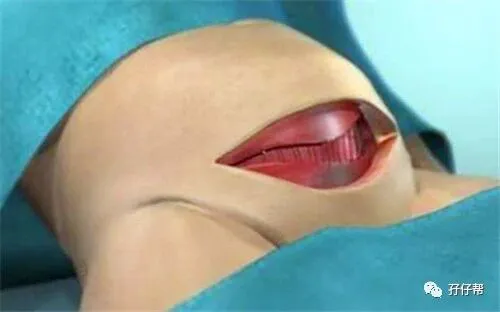
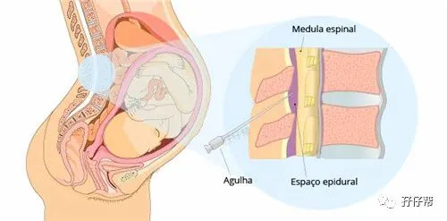
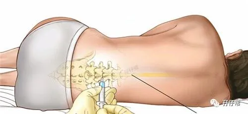
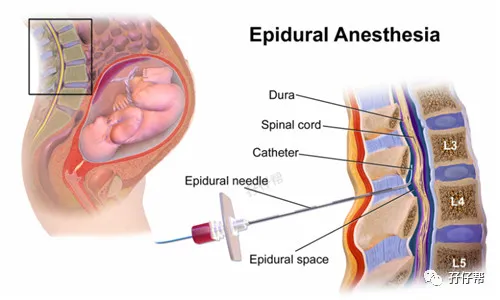
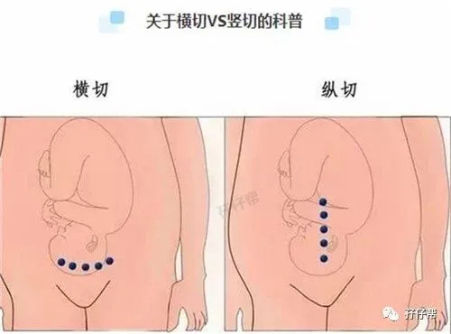
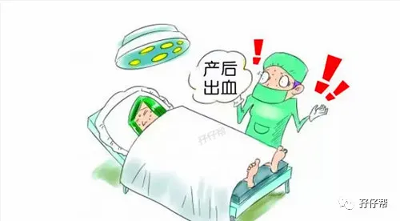
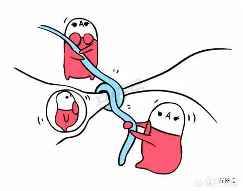
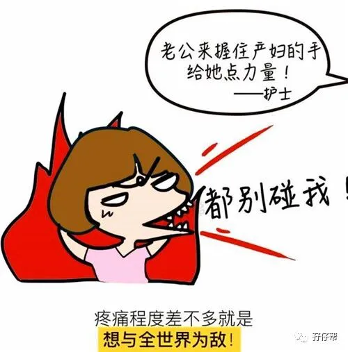
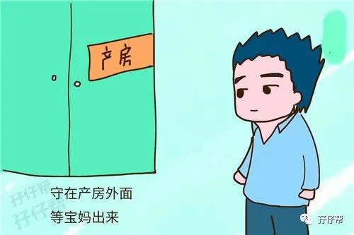

欢迎关注孖仔帮～
我是圆圈妈，孖仔帮接下来要分享圆圈妈（sgguy.com）的双胎子宫日记系列推文之双胎妈妈剖腹产的注意事项（分术前，术中，术后）
这是圆圈妈的剖腹产全过程纪实录的姊妹篇，因篇幅较长，将分为三部分，分别是
1. 双胎子宫日记|双胎剖腹产回忆录之术前准备篇
2. 双胎子宫日记|双胎剖腹产回忆录之手术进行中
3. 双胎子宫日记|双胎剖腹产回忆录之术后护理篇
备注：图片来源于网络，考虑到孕妈咪的产前心情，图片大多都采用搞笑漫画形式，让剖腹产没那么恐怖。
★ 前言 ★
剖腹产对于孕产妇来说是一个大手术，因为这个手术对母体伤害很大，对新生儿也没什么好处，而且本身还存在很多风险。实在不讨喜！
但剖宫产术是产科领域中的重要手术，已成为解决难产和某些产科合并症，挽救产妇和围产儿生命的有效手段。这也是个不争的事实。
从肚皮到子宫，你与两个胎宝宝隔了7层，它们分别是皮肤、脂肪、肌膜、腹肌、腹膜层、子宫肌肉层和羊膜囊。
因此想要见到那两个日夜盼望的小宝宝，你要经历7层的切肤之痛。
讲真，现在圆圈妈sgguy看之前写的子宫日记，觉得剖腹产好像也没有什么可怕的嘛！哈哈（好了伤疤忘了疼...）
手术台上一躺，麻醉针一打，手术刀一割，俩娃一抱，肚子一缝。
卸货啦，升级啦！当妈妈啦！
继孖仔帮sgguy.com上一篇推文《双胎子宫日记|双胎剖腹产回忆录之术前准备篇》，这一期推文主要是说说双胎妈妈剖宫产手术时的注意事项。
1
麻醉方式
有些医院的麻醉师会和你讨论麻醉的方式，目前有三种方式：脊椎、硬膜和全身麻醉。
脊椎和硬膜麻醉几乎差不多，会使你胸部以下的身体失去感觉，你在这个过程中仍然保持清醒。
你基本感觉不到疼痛，药物也基本不会到达胎儿体内。
通常，麻醉师都会建议你用硬膜麻醉的式，且大多数的剖宫产都是用这个方式，如有特殊情况会用全身麻醉。
如我隔壁床的单胎宝妈，因为肝脏有瘤，34周就被迫终止妊娠，全身麻醉，剖宫产后直接送进了ICU。
全身麻醉时你完全没有意识，可以用在胎儿需要被迅速娩出的紧急剖宫产中。
但最好不要选这种方式，毕竟有一些药物会或多或少进入胎儿体内，虽然影响较小。
可能在手术前签知情同意书的时候，圆圈爸已经帮我选择了麻醉方式。
因此在手术室的时候，麻醉师并没有跟我沟通麻醉方式。（看吧！老公的重要性，决定你的生死啊！）
打麻醉的时候，需要密切配合好麻醉师，反正麻醉师让干嘛就干嘛，而且要严格落到实处。
千万不要跟麻醉师过不去，要是他准备扎针的时候，你不小心动了下，扎偏了怎么办，全身瘫痪都有可能。
打麻醉的时候，疼！但是可以忍受！不必太担心。
2
刀口是横切OR竖切
这个一般医生说了算吧，反正我的主刀医生没有跟我商量怎么切。
一般是横切比较多，切口横穿子宫下半部，是最常见的，用于绝大部分剖宫产。
这种方式更容易进入子宫，切口出血少，造成膀胱损伤的风险更低，形成的伤疤更牢固，将来生产时几乎没有破裂的风险。
当然也有竖切，比如有些胎位不正的宝宝，可能子宫纵切更为合适。底部纵切位于子宫底部组织更薄的部位，用于胎儿处于脚先露、臀先露或横位时。
不管怎么个切法，孩子们活着出来就行，其实若医生要对我千刀万剐才能把圆圈取出来，我也愿意的！
3
术中出血和输血
我在术中总共失血量450ML， 相当于中等瓶装的矿泉水一瓶。医生在给我缝合子宫的时候，子宫切口渗血多，不得不再补打一只止血针。
因为术前HGB值只有82G/L，被输血800ML以纠正贫血。
我一直对这个输血耿耿于怀，担心因此得艾滋病， 虽然这种概率比较低，但是依然心里有疙瘩，直到现在都不敢去查。
因此，不管是顺产和剖腹产，为了避免生产时被输血，请孕期千万不要贫血，一定要在术前把贫血纠正过来。
每次我在孖仔帮sgguy孕期群以及公众号的推文都会不厌其烦地重复提到双胎妈妈孕期贫血后果的严重性。
对不起，你们嫌圆圈妈啰嗦吧！我下次还是会念叨一遍的。
4
顺便结扎吗？
有很多宝妈会在剖腹产后顺便结扎，若对后期没有再次生育的打算，同时结扎确实省事很多。
但是这可是人生大事啊，结扎意味着输卵管要被切除掉，意味着以后都没有办法生育。
我在孕期时，圆圈外婆就叫我剖腹产的时候千万不要结扎。嗯，其实我也没有要结扎的意思，以后的事情谁知道呢。
避孕有很多方式不一定非要结扎。因此在这问题上，一定要两口子，甚至两家子人围成一团都互相商量好才行，且要慎重考虑。
5
护士抱宝宝做什么去了
根据我的亲眼所见，医生把圆圈从胎盘里抱出来之后就剪掉了脐带，然后由护士抱走了。
后面也是从网上了解到，护士把宝宝抱走之后会对新生儿做各项检查和简单的清洗。
医院给的剖宫产手术记录有提到圆圈新生儿时的情况：Apar’s评分：1分钟评10分/10分， 5分钟评10分/10分
我躺在手术台的时候，意识清醒，一直竖着耳朵听他们的哭声，好像小猫小狗那种呜咽声，一点都不响亮。也听到有护士在记录他们的身高体重。2650G/2620G ，身长47CM/47CM。
还有，护士把宝宝检查清理之后，会抱过来给你确认性别，不要小看这个动作。
第一确实是想让你第一时间确认下孩子的情况，免得搞错了。第二也是为了判断你术中的情况，是否意识清醒。
6
剖腹产到底痛不痛？
不痛！真的不痛！圆圈妈sgguy.com这么怕疼都能受得了，你一点可以的！
就是有点反胃难受，肠子都被掏出来还能舒服到哪里去呢？
但这个不痛是有期限的，仅仅限于打麻醉之后，等麻醉药效过后，那才叫痛的求生不得求死不能。
圆圈妈对双胎宝爸有话说
不管是剖腹产，还是顺产，其痛苦和危险都是男人想像不到的。
当你的妻子走进产房的那一刻，你不仅是在迎接一个新生命的到来，也是在等待妻子的第二次生命。
所以，男人，不要抱怨妻子为你生下孩子后日渐隆起的小肚腩；不要嫌弃妻子为家庭日夜操劳后的年老色衰。
她也曾经年轻过，也拥有过妙曼的身材。
最后，是男人的话，请好好疼爱你的妻子。
圆圈妈对双胎宝妈也有话说
姑娘们，发现没有，剖腹产的时候，掌握你生死的除了主刀医生和麻醉师，还有一个很重要的人物就是你们各自的老公。
手术知情书要老公签字的，麻醉方式也要老公签字的，要是术中有什么闪失，也要老公签字批准，才能抢救。
现在想想觉得老公好重要啊，分分钟决定着你的生死。榆林跳楼的那个孕产妇就是个例子。
因此，圆圈妈我要啰嗦下了，一定要擦亮双眼嫁对人！
未
完
待
续
文|圆圈妈
家有孖仔男两枚，微信公众号孖仔帮（ID：babytwins-mummy）个人博客（www.sgguy.com）与您分享双胎孕期育儿的囧人囧事。
温馨提示
上期推文：
双胎子宫日记|双胎剖腹产回忆录之术前准备篇
下期预告：
双胎子宫日记|双胎剖腹产回忆录之术后护理篇
本文系圆圈妈原创，来源于孖仔帮，专注双胞胎孕期育儿经验分享，著作权归孖仔帮所有
如需入孖仔帮微信社群，
请＋圆圈妈V号sgguy-com
各位双胎妈妈，更多孖仔帮原创育儿文章请猛戳 "阅读原文" ，或者直接上圆圈妈的个人博客，大把双胎孕期育儿心得经验分享。










